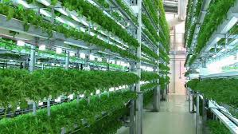
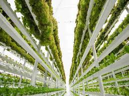
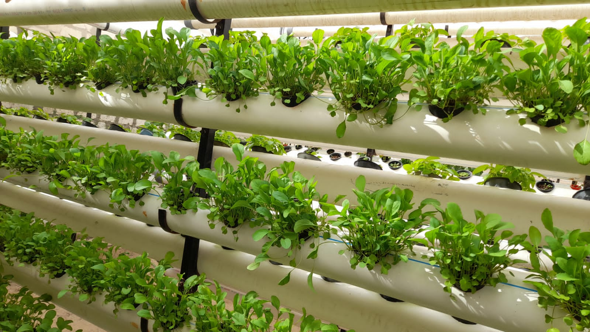

A modern agricultural practice that involves growing crops in stacked layers or vertically inclined surfaces, often within controlled indoor environments.


It saves space by growing crops in stacked layers, reduces water consumption compared to traditional farming, produces food year-round, and reduces the need for pesticides. It also brings fresh produce closer to urban areas.
Hydroponics (growing plants in nutrient-rich water), aeroponics (growing plants in the air with sprayed nutrients), and aquaponics (combining fish farming and plant farming).
